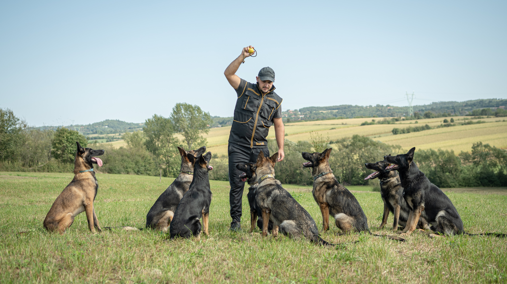

SIMPOR DOGS
Kennel & Dog Training Center · FCI 3428



Carefully selected dogs with proven genetics and outstanding working qualities — for sport, K9, protection, or family life.
Choose Your Path
Dogs currently part of the Simpor program, actively used in breeding and training.

Select a dog for sport, work, protection, or family life — guided by our expert team.

Carefully bred puppies from selected bloodlines — health tested, temperament evaluated.
Currently in Program
We present the dogs that are currently part of the Simpor Dog Center program and are actively used in breeding and training. These are carefully selected dogs with proven genetics, stable temperament, and strong working and conformation qualities. All dogs are kept in continuous training and evaluation in order to maintain the high level of working ability and quality standard that defines the Simpor line.
Browse our currently available dogs — for sport, K9 work, protection, or family life.
View Available Dogs →